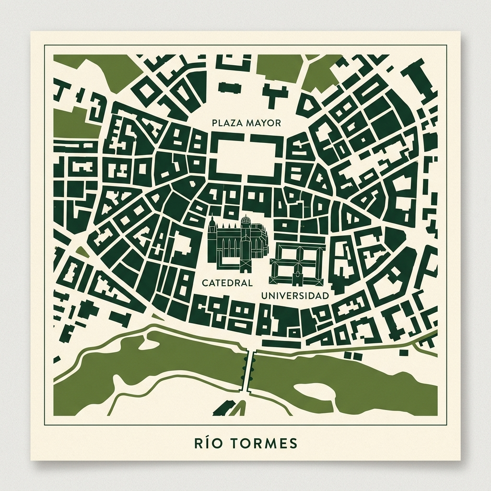
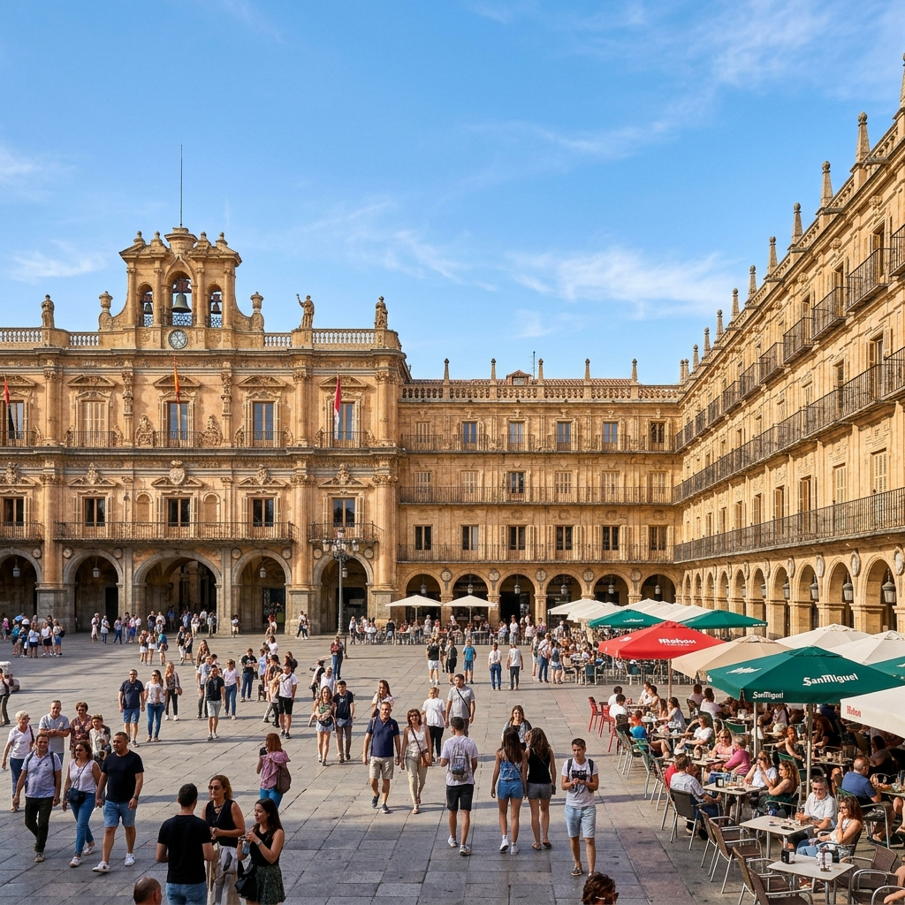
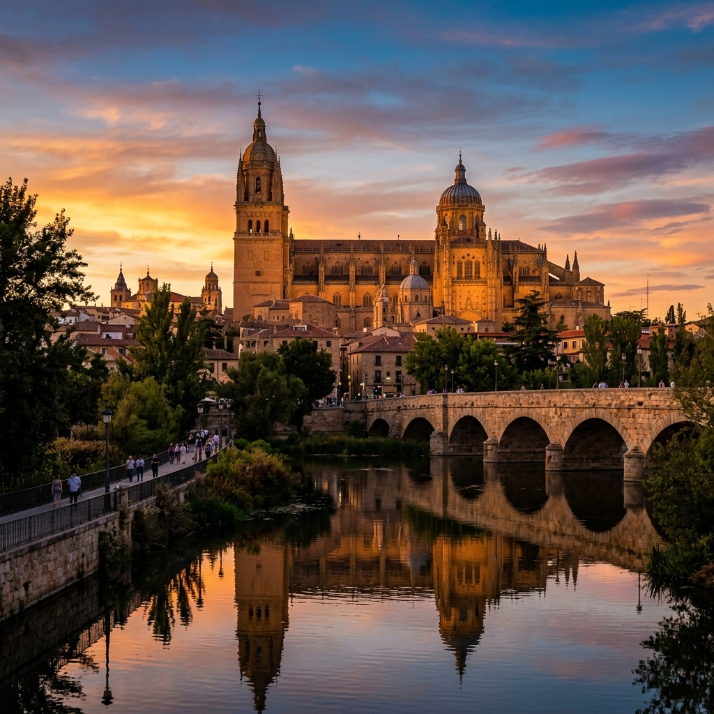
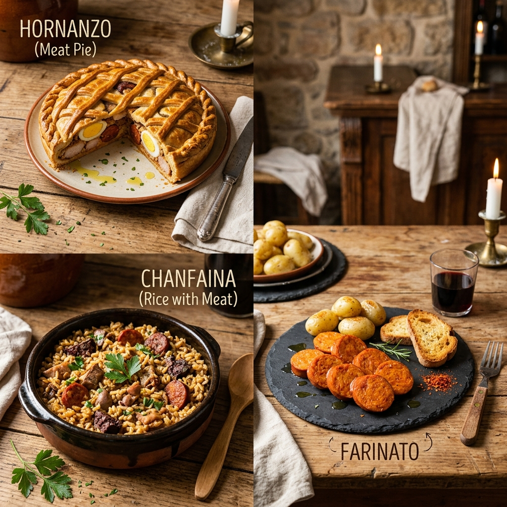

¿Dónde se encuentra?
Salamanca se sitúa en el oeste de España, en la comunidad autónoma de Castilla y León. Es la capital de la provincia homónima y se asienta a orillas del río Tormes, en un entorno mesetario que le otorga su característico clima y luz.

Monumentos Imprescindibles
Conocida como la "Ciudad Dorada" por el tono de la piedra de Villamayor, Salamanca alberga algunos de los monumentos más bellos de España.

Plaza Mayor: El corazón de la ciudad.

La Catedral: Un conjunto arquitectónico único.
Alma Mater: Ciudad Universitaria
La Universidad de Salamanca es una de las más antiguas del mundo. Fundada en 1218 por Alfonso IX de León, ha sido durante siglos un faro de conocimiento que atrae a estudiantes de todos los rincones del planeta, dando a la ciudad una atmósfera vibrante y joven.
Sabores Salmantinos
La gastronomía de Salamanca es rica, contundente y llena de tradición. Destacan productos derivados del cerdo ibérico y platos que reconfortan el alma.
- Hornazo: Empanada rellena de lomo, jamón y chorizo.
- Chanfaina: Arroz con sangre, trozos de cordero y especias.
- Farinato: Embutido típico de Ciudad Rodrigo, hecho con pan y grasa.

Solicitar Información
¿Quieres saber más sobre Salamanca? Déjanos tus datos y nos pondremos en contacto contigo.